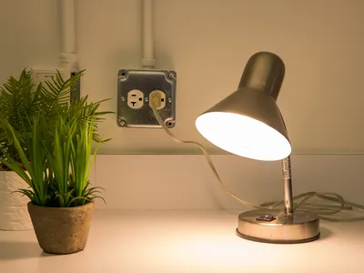

Czym są lampy?
Lampa to urządzenie, które służy do wytwarzania sztucznego światła za pomocą prądu elektrycznego, oleju lub gazu.

Przykład lampy biurkowej
Dzisiaj najczęściej używane są lampy elektryczne, które wytwarzają światło w wyniku przepływu prądu elektrycznego.
Niektóre lampy elektryczne charakteryzują się bardzo dużą skutecznością świetlną, możliwością wytwarzania bardzo dużych strumieni świetlnych, a także łatwością oraz bezpieczeństwem eksploatacji.